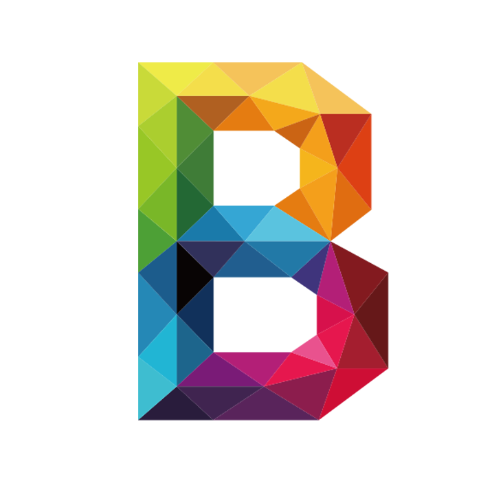

Студия художественной
Как нас найти?
Студия находится по адресу: Пушкино, 2-я Домбровская улица, дом 26
| Понедельник | Выходной |
|---|---|
| Вторник | 15:00–19:00 |
| Среда | 15:00–19:00 |
| Четверг | 15:00–19:00 |
| Пятница | Выходной |
| Суббота | Выходной |
| Воскресенье | Выходной |